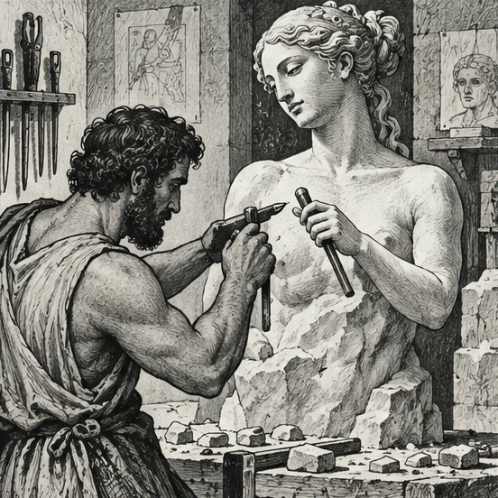

Windows
Windows 10 or 11, 64-bit.
The installer isn't code-signed yet, so Windows may say "Windows protected your PC". Choose More info, then Run anyway.
Poiesis runs on your computer. It remembers what it learns about you, repairs what breaks, and shows you every change it makes to itself. You decide what it may change.
Most assistants forget you when the chat ends, and nobody repairs them but their makers. Poiesis does the work of staying useful. It writes down what it learns. It reads back over its own mistakes. It notices when a part is broken and works around it. And it never does any of this in the dark.

It keeps facts about you, and lessons from its own mistakes, as plain files on your disk.
When a chat ends it reads it back. A lesson is kept only if it is worth keeping, and a second check gates it.
A file it cannot read is set aside, not deleted. A tool that keeps failing is noted, and it plans around it.
Each change to itself is tested against fixed rules. A change that makes it worse is put back, and you are told.
Poiesis is Greek for making. Autopoiesis describes a system that keeps producing its own parts, like a living cell. Here you are the boundary that decides what may change. About the name
Everything the agent keeps lives as plain markdown in your app data folder. No database stands between you and it. Open a file in any editor and change it. Delete a file and the agent forgets that thing.
A self-improving agent is only safe if you can see it and stop it. When it writes to its own memory, a quiet notice appears at that moment, with an Undo. It is never a log you have to go and find.
For each kind of change you choose how much freedom it gets. Pick a level on the right and see what happens when the agent learns something.
It plans, starts helpers, leads a team you drew, or hands a job to a coding agent you already have. You can open any of them, steer it or stop it.
Facts and lessons as text files, recalled by meaning, with Undo.
Plans, goals, many chats at once, rewind and fork.
Name who does the job, or draw a team with reviews and a budget.
Claude Code, Codex and others, under your rules.
Scheduled tasks that wait for your yes.
An Android app or your own bot, off until you switch it on.
Ask your files questions in your own words.
Runs your tests and shows a patch of its own edits.
Notion, Slack, Calendar and more. A send asks, or stays within your daily limit.
Talk to it. Hearing and speaking stay on your machine.
Ask for a picture, a table or a checklist in the chat.
The right engine chosen for you, and cost in the open.
Chat with models that run on your own machine. Add your own key for OpenAI, OpenRouter or Anthropic if you want a hosted model in the same picker. The two are marked, so you always know where a reply came from.
Your cloud keys live in Windows Credential Manager, the macOS Keychain or the Linux Secret Service. They are never in a file or in your chats.
Web pages, mail and fetched files are marked as coming from outside. Text like that can never become a saved memory.
You choose which folders it may see. Anything that destroys bytes is saved first and can be restored.
Every build comes from the same release. Installed copies check for new versions themselves and always ask before installing one.
Windows 10 or 11, 64-bit.
The installer isn't code-signed yet, so Windows may say "Windows protected your PC". Choose More info, then Run anyway.
Apple Silicon (M1 or newer). Intel Macs aren't supported.
It isn't notarised by Apple. The first time, open it from System Settings, Privacy & Security, Open Anyway. Updates after that need nothing extra.
Older versions and every file are on the releases page. You can also build it from the source.